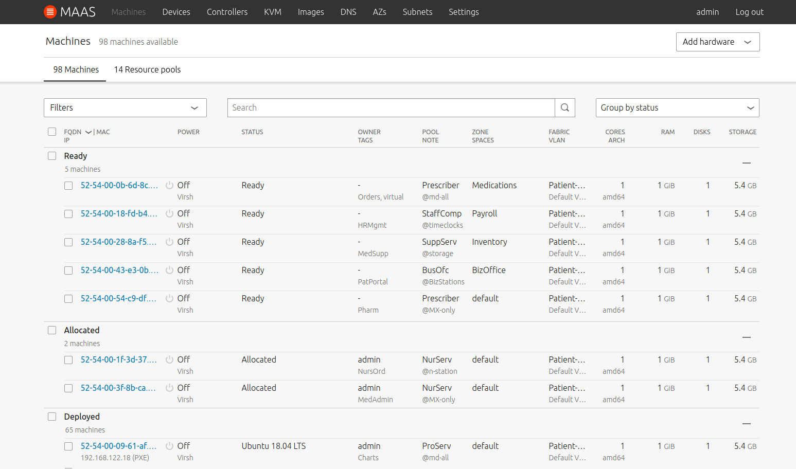

MAAS is Metal As A Service, a service that lets you treat physical servers like virtual machines – instances – in the cloud. No need for you to manage servers individually: MAAS turns your bare metal into an elastic, cloud-like resource.

How to engage with MAAS